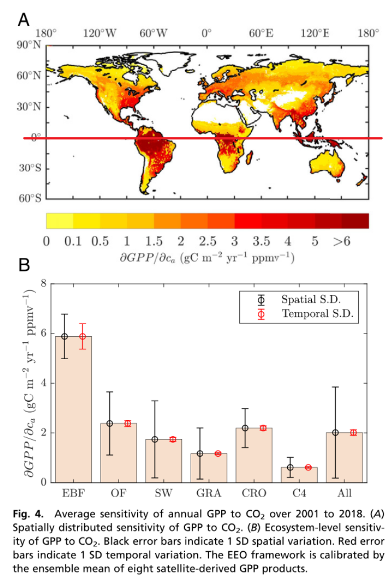
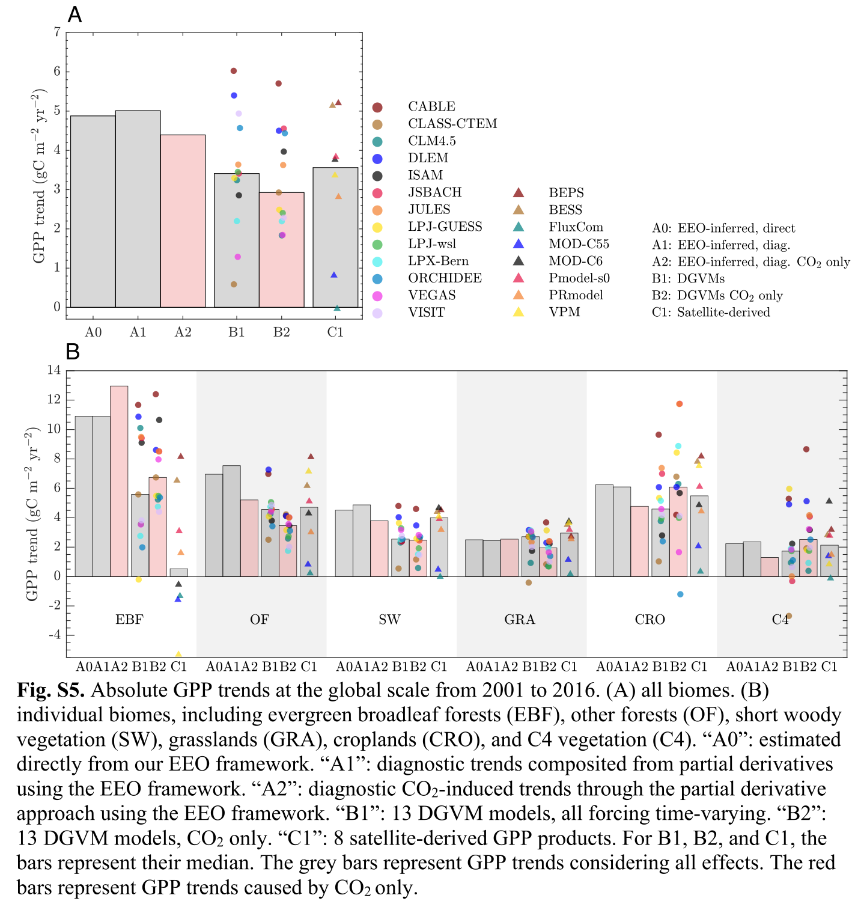

文献阅读
阅读笔记
主要内容
全球光合作用随着大气CO2浓度的升高而增加，这一反应被称为CO2施肥效应（CFE），但CFE的关键过程没有受到限制，因此仍然不确定。在这里，我们通过将来自全球分布的涡度协方差测量网络的观测结果与基于三个成熟的光合优化理论的分析框架相结合来量化CFE。我们报告了整个观测网络（9.1 gC m-2 year-2）中光合作用的强烈增强，并表明自2000年代以来，CFE对总初级生产力（GPP）的增强负有44%的责任，其他贡献主要来自变暖（28%）。土壤湿度和比湿度通过对植物水力学的影响，是GPP年际变化的两个最大贡献者。将我们的框架应用于卫星观测和气象再分析数据，我们诊断出全球CO2诱导的GPP趋势为4.4 gC m-2 year-2，比13个动态全球植被模型和8个卫星衍生的GPP产品的中值趋势至少强三分之一，主要是因为它们在常绿阔叶林中CFE的大小不同。这些结果突显了近几十年来CFE在全球碳循环中发挥的关键作用。
研究问题：量化二氧化碳施肥效应
Global photosynthesis is increasing with elevated atmospheric CO2 concentrations, a response known as the CO2 fertilization effect (CFE), but the key processes of CFE are not constrained and therefore remain uncertain. Here, we quantify CFE by combining observations from a globally distributed network of eddy covariance measurements with an analytical framework based on three well-established photosynthetic optimization theories.
全球光合作用随着大气中二氧化碳浓度的升高而增加，这种反应被称为二氧化碳施肥效应(CFE)，但CFE的关键过程不受限制，因此仍然不确定。在这里，我们通过将来自全球分布的涡旋协方差测量网络的观测与基于三个成熟的光合作用优化理论的分析框架相结合来量化CFE。
研究背景
植物光合作用是从大气进入生物圈的最大碳通量（1）。理论和实验观察都表明，由此产生的初级生产力总量（GPP）随着大气CO2的增加而增加，这一过程被称为CO2施肥效应（CFE）（2-8）。CFE通过直接增加陆地碳同化率，在抵消人为排放方面发挥着重要作用。它影响全球碳收支（6）和水收支（9），从而导致温度和降水量的变化，并通过植被——通过增加植物生长的气候反馈（10）间接影响气候变化（11）。因此，理解CFE对于理解地球气候的演变至关重要。
尽管全球光合作用很重要，但在自然环境中观测推断的GPP的长期记录很少。这导致光合作用随时间变化的幅度和CFE（4,12–14）存在很大的不确定性。涡流协方差（EC）是一种测量全球数百个生态系统中气体交换的方法，它提供了光合作用的估计值，可能包含有关CFE的信息（14）。然而，由于自然环境的气候变异性和许多地点的测量持续时间较短，因此从这些观测结果中估计CFE具有挑战性。试图将CFE从碳通量中分离出来的研究要么局限于排除因果归因的简单统计方法（15,16），要么局限于基于过程的方法，尽管捕捉到了反应的迹象，但报告的敏感性差异很大（17,18）。这种不确定性导致了关于CFE大小的争论，基于卫星和地球系统模型（ESM）的CFE估计值之间的巨大差异（19-23）证明了这一点。事实上，由于缺乏生态系统规模的观测证据，许多基于卫星衍生指标的GPP产品并没有明确说明CFE（20、24、25），而当前对CFE的表述在ESM之间也存在显著差异（26-28）。
研究重要性与创新点
二氧化碳施肥对陆地光合作用的影响程度是不确定的，因为它不是直接观察到的，并且受到气候变化的混杂影响。我们应用了三个成熟的生态进化最优性理论，即气体交换和光合作用，使用可测量变量来约束二氧化碳施肥的主要过程。利用这个框架，我们提供了强有力的观测推断证据，表明在全球分布的涡动协方差网络中可以检测到强烈的二氧化碳施肥效应。将我们的方法应用于全球高端光合作用，我们发现二氧化碳施肥效应的大小与其原位效应相当，但强调了许多基于反射的卫星光合作用产品在热带森林中严重低估这种效应的可能性。
研究思路
在这里，我们利用全球分布的EC观测和再分析数据，使用生态进化优化（EEO）框架来检测和属性CFE。该框架结合菲克定律和Farquhar von Caemmerer-Berry（FvCB）光合作用模型（29），协调了三个成熟的优化理论，约束光合作用和关键中间变量，即气孔导度（g）（30,31），细胞间叶片CO2浓度（ ci ）（32,33），和光合能力（34-38）（一般说明见材料和方法，衍生见SI附录）。该框架可以分析诊断GPP及其对七个可测量变量的敏感性，即大气CO2浓度（ ca ）、叶面积指数（LAI）、气温（ Ta）、土壤体积含水量（SWC）、比湿度（qa）、入射短波辐射（SWN）和表面压力（P），无需规定特定于生物群落的光合特性（35）。我们的研究结果显示，全球测量点的光合作用总体增加，其中很大一部分增加归因于二氧化碳上升的影响。
研究方法
EEO Framework for GPP and CFE.
在叶片尺度上，结合菲克定律和FvCB生物化学光合模型，给出C3和C4植物在光饱和和光限制条件下的CO2通量的表示。然后，根据理论1和理论2，演算光合作用下的关键变量ci（胞间CO2浓度）、g（气孔导度）和λ（边缘水分利用效率）。根据理论3，计算光合作用能力Vcmax（最大羧化速率）和Jmax（最大电子传递速率）。再引入LAI（叶面积指数），通过大叶模型将光合作用能力Vcmax和Jmax进行升尺度。考虑土壤水含量和站点，修正前述得到的λ，计算ci。
我们推导出了一个简约的 EEO 框架，该框架限制了植物的光合作用和每月的水分流失。除了通过因子模拟归因 GPP 的变化外，该框架还允许 GPP 对大气 CO2 和各种可测量的环境条件的偏微分敏感性。这一点尤为重要，因为 GPP 和 CFE 都不能直接在自然环境中测量，而 GPP 的明显变化是由于 CO2 和其他环境条件变化的混杂效应。我们使用 Fick 定律和 FvCB 光合作用模型作为叶级光合作用的控制方程。然后，光合作用受到三个成熟的优化理论的约束，这些理论和经验证据广泛支持（3、4、30、32、34-37、44、48、69-73）。协调这些优化理论旨在约束光合作用中的关键变量 (33)，例如边际水分利用效率 (mWUE) (74)、气孔导度 (g)、叶细胞间 CO2 浓度 (ci) 和光合能力。 EEO 框架的详细信息来自 SI 附录，文本 S1 至 S7。我们在下面简要总结了这个框架的概念。
根据菲克传质定律，忽略叶片边界层和叶肉阻力，叶片光合作用是气孔导度 (g) 与大气 (ca) 和叶片细胞间 CO2 浓度 (ci) 之间的梯度的乘积。对于第一个直观的猜测，ca 的增加会导致光合作用的增加。然而，植物积极优化碳增益和水分损失之间的权衡。优化通过间接降低 g 和增加 ci 以最终增加每单位水分损失的碳增益，部分抵消了升高的 ca 的直接光合作用益处。
• 理论1 指出，植被通过优化g 以响应不断变化的环境，使碳增加和水分损失的总和最大化(30)。
• 理论2 指出，植被通过优化ci (32) 将单位碳同化的蒸腾和羧化总成本降至最低。
具体来说，理论 1 约束 g，理论 2 约束 ci。结合理论 1 和 2 提供了对 mWUE 的直接约束。 g 和 ci的优化应该是充分和必要的，因为 g 的变化不仅可以通过控制环境 CO2 的流入速率来影响ci (30)，而且 ci 的变化可以通过调节保卫细胞膜电位来调节气孔孔径。 4、75、76)。为了进一步考虑光合作用的水分胁迫，我们使用逻辑函数来近似 mWUE 随 SWC 的变化（SI 附录，图 S 9）（33、49、72、77）。这直接允许框架通过校准特定地点的常数（即
在生物地球化学响应方面，我们假设植物优化养分分配以响应升高的二氧化碳及其生长环境。我们使用光合协调理论（理论 3）来约束植物如何优化其养分投资，这允许在不规定生物群落类型的情况下估计光合能力（即 Vcmax和 Jmax）（34-37）。
理论 3 指出，在比理论 1 和 2 更长的时间尺度上，植物通过 1,5-二磷酸核酮糖羧化酶 (Rubisco) 活性和 1,5-核酮糖在平均白天条件下将参考光合能力调整到几乎相等的光合作用限制。二磷酸盐（RuBP）再生（可分别与光饱和和光限制互换）（34-37）。
换句话说，协调理论指出，叶片养分含量受到调节以反映光合能力，这与光合能力受叶片养分含量限制的假设相反（78）。尽管该理论得到了多项研究的充分支持（34-37），但确定光合能力和叶片养分含量之间的因果关系，或者实际上是寻找限制两者的共同因素的第三种选择，值得进一步研究（78）。然而，协调理论抓住了光合能力和叶片养分含量之间的相关性，并暗示养分限制应该隐含在 LAI 中（37）。我们针对 g 和 ci 的每月优化测试了光合能力协调的不同时间尺度，并将我们的结果与 EC 衍生的 GPP 进行了比较（SI 附录，图 8）。我们使用最能捕捉 EC 衍生的 GPP（图 1A）的趋势和 IAV 的时间尺度作为我们的分析。也就是说，Vcmax 和 Jmax的参考率适应了研究期间 LAI 峰值月份的平均环境 (67, 68)。对于其他月份，Vcmax 和 Jmax 是温度及其参考值的函数 (38)。因此，我们的框架允许光合作用能力在十年时间尺度上针对不断变化的大气 CO2 和气象条件进行优化，并且光合作用大致受到 Rubisco 和 RuBP 的限制。探索的其他时间尺度包括参考 Vcmax 和 Jmax 值优化，根据 1) 峰值月份 CO2 的逐年变化 + 研究期间峰值月份气象条件的平均值，2) 峰值月份 CO2 和气象条件的逐年变化， 3) 研究期间 CO2 的逐月变化 + 高峰月气象条件的平均值，以及 4) CO2 和气象条件的逐月变化。这些代表了一系列适应时间尺度，从短期的每月和每年的适应到长期的十年适应。
为了保持 EEO 框架的简约和分析性质，LAI 使用大叶方法对叶级光合作用进行了升级。 LAI 的变化隐含地解释了生长季节延长、干扰恢复和演替的冠层尺度效应。消光的放大因子，表示为
其中 ΔGPP 是 GPP 变化；
其中 D 是 VPD，如果光合作用受光限制，则 Vcmax 应替换为 Jmax，K 是 Michaelis-Menten 系数，Γ 是 CO2 补偿点，η 是环境空气温度下的水粘度与参考值的比值温度为 298.15 K。偏导数的完整解析形式可以从 SI 附录中的 MATLAB 脚本中检索。
为了与其他研究进行比较，我们使用参考文献8中使用的度量来计算与 CO2 变化相关的 GPP 变化。
其中 GPPs 和 ca,s 是起始年份的值，GPPe 和 ca,e 是结束年份的值。统一的 βln 值表示 GPP 对 CO2 的直接比例响应。我们提醒，这个 βln 因子仅用于比对目的；它不是偏导数，并且默认情况下不会像
主要结论
强烈的CO2引起的站点尺度光合作用的上升。Strong CO2-Induced Increase in Site-Scale Photosynthesis
三个指标用于量化和评估GPP对CO2的响应。
是给定环境条件下GPP对CO2的偏微分敏感性（即公式1中的∂GPP/∂ca）。它直接由EEO框架进行诊断，该框架将GPP的混杂效应与其他环境条件解耦。 是一个无量纲的、明显的GPP对CO2的响应的对数比，参照参考文献8(公式3)，以与其他研究进行比较。GPP的变化包括CO2和非CO2影响。 是无量纲的、直接的GPP对CO2的响应的对数比，这意味着GPP的变化只包括CO2效应。通过理想的实验操作，如自由空气CO2富集(FACE)实验或偏导数方法，可以忽略或解析解耦混杂效应。它与 具有相同的方程，仅用于与其他研究的比较。


我们发现，在2001年至2014年期间，EC网络中632个观测点年的GPP测量值呈现出9.1 gC m-2 year-2的强劲的增长趋势【四分位数间距（IQR）∈ [8.5,11.5]，P<0.01，
为了量化不同因素导致的GPP趋势，我们使用EEO框架进行单变量敏感性分析（SI附录，图S4）。单个因素的总趋势（10.3 gC m-2 year-2，IQR∈ [7.7,11.0]）与EEO推断的和EC推断的趋势相似（图2A）。我们发现，ca在站点水平上有很强的直接贡献，占总GPP趋势的44%（4.5 gC m-2 year-2，P<0.001）（图2A）。我们还使用偏微分法（4.9 gC m-2</sup> year-2，等式1右侧的第一项）诊断了另一个总体的CO2诱导的GPP的趋势，与单变量分析相比，结果存在微小差异（0.4 gC m-2 year-2）。然后，我们将单变量分析得出的估计值进行转换，对应于0.61的GPP与CO2的直接响应比（
除ca外，Ta起着第二重要的作用，占总趋势（图2A）的28%（2.9 gC m-2 year-2，P<0.05），主要是因为变暖对光合能力的影响，即Rubisco活性的最大速率Vcmax</sub>和电子传递的最大速率Jmax（图2C）（38）。尽管温度升高会通过蒸汽压差（VPD）和某些生化反应途径（图2C）对GPP产生负面影响，但这些负面影响比温度的正面影响要弱（图2A和B）。SWC（土壤水含量）和比湿作为植物供水和大气需水的代表，共同贡献了总趋势的14%（0.91和0.50 gC m-2 year-2，P>0.05），但在统计上不显著。然而，这两个因素（即SWC和qa）是GPP的IAV（年际变化）的最大贡献者，它们的贡献（中值分别为48和33 gC m-2 year-1；图2B）的幅度大于GPP趋势的幅度（图2A）。这些结果与之前的数据和ESM驱动的关于植物对水的响应的研究（43–47）一致，并且进一步得到了以下观察结果的支持：当植物试图最大限度地提高每单位水分损失的碳增益效率（30、32、48、49）时，GPP异常受气孔导度和叶片ci的调节。
其他因素，例如 LAI 和辐射的长期变化，也可能导致整个 EC 网络的 GPP 发生变化。然而，我们发现由于 LAI 增加的GPP的趋势很小且统计上不显著（0.88 gC m-2 year-2；图 2A），这与之前仅考虑 GPP 对 LAI 变化的响应的研究一致（ 50)。这种 LAI 引起的 GPP 小趋势与 LAI 趋势相当，两者都在‰ year-1 (51) 的数量级上，尽管我们的框架诊断出 GPP 对 LAI 的潜在敏感性很大（mean ∂GPP/∂LAI = 119，站间 SD = 178，单位：gC m-2 year-1)。此外，冠层辐射传输中的光饱和 (52) 可能导致低 LAI 诱导的 GPP 趋势，因为叶面积的增加并不能有效地转化为高 LAI 下吸收的光合有效辐射比例的增加 (3, 20)。对于入射短波辐射的变化，它们对总 GPP 的贡献也很小（0.43 gC m-2 year-2；图 2A），因为在年尺度上研究地点的辐射没有大的趋势。因此，我们得出结论，LAI 和辐射的变化都不会显着促进观察到的 GPP 上升趋势。地表压力变化的影响也可以忽略不计（图 2 A 和 B）。
全球尺度CO2施肥的影响Effects of CO2 Fertilization at the Global Scale
为了检查全球 CFE 模式，我们将我们的框架应用于MODIS LAI 和ERA5-Land。在这里，我们的 EEO 框架通过所有八种卫星衍生 GPP 产品的整体平均值进行校准。然后，我们评估由 EEO 框架直接估计的 GPP 趋势和潜在的差异敏感性，它们本身可用于重建复合趋势估计（式1）。相对于 2001 年和 2016 年的平均 GPP（图 3A 中的 A0 和 A1），这两种方法显示了几乎相同的明显 GPP 趋势，约为 4.7% 十年？1（P < 0.001）。由此产生的 CO2 引起的 GPP 趋势约为 4.1% 每十年（4.4 gC m-2 year-2，P < 0.001）（图 3A 中的 A2；SI 附录，图 S5）。我们注意到在全球尺度分析中 ca对表观 GPP 趋势的部分贡献可能是不确定的，由于气候强迫趋势的不确定性导致表观 GPP 趋势的不确定性，我们没有报告它。然而，由于我们偏微分方法的性质，对 CO2 引起的 GPP 趋势的估计（图 3 中的 A2，计算为
我们将 CO2 引起的 GPP 趋势（图 3 中的 A2）与 13 个动态全球植被模型（DGVM）和 8 个卫星衍生 GPP 产品在重叠期间（2001 年至 2016 年）的模拟值进行了比较。我们的估计处于其趋势分布的上端，至少比中位数强三分之一（图 3A）。 DGVM (B1) 和卫星衍生产品 (C1) 的中位数 GPP 趋势较低可能是由于它们在常绿阔叶林 (EBF) 中的 CFE 较小（图 3B）。我们的 EEO 框架表明，在所有 C3 物种（包括 EBF）中，由 CO2 引起的类似相对 GPP 趋势，范围从 4.3% 到 5.1% 每十年（图 3B 中的 A2）。我们进一步用每个单独的产品替换所有卫星衍生 GPP 的整体平均值以校准 EEO 框架，发现诊断出的 CO2 引起的相对 GPP 趋势的分布很小（SI 附录，表 S2），尽管这些单个用于校准的卫星 GPP 产品差异很大（2001 年全球 GPP 在[MOD-C55]有 104 Pg C year-1的最低值，在 Pmodel-s0有131 Pg C year-1的最大值）。在 EBF 中，值得注意的是卫星 GPP 产品只考虑卫星反射率的间接 CFE，而不考虑气体交换的直接 CFE [即 FluxCom、MOD-C55、MOD-C6 和植被光合作用模型 (VPM)] ，不报告增加的 GPP 趋势（图 3B）。他们的 GPP 趋势不能代表 CFE，因为他们仅根据气候强迫和叶子绿度或其替代物来模拟 GPP。由于热带地区的温度过高和干旱胁迫，再分析数据中的气候强迫可能对 GPP 产生负面影响（参见 SI 附录中的 EBF 列，表 S3），并且叶绿度的弱趋势不能完全推断直接 CFE 效应因为 EBF 中的反射率饱和（56-62）。虽然气候强迫的选择可能会给我们的 CFE 估计带来一些不确定性，但我们发现与另一个强迫数据集相似的诊断结果[即 SI 附录中的(CRU-JRA55，图 S7]。此外，我们计算了全局尺度分析的
GPP对CO2的偏微分敏感性The Partial Differential Sensitivity of GPP to CO2
为了进一步表征潜在的 CFE，我们展示了
根据植物光合作用优化理论并通过从 EC 网络或卫星估计的 GPP 幅度来衡量，我们的 EEO 框架从气体交换的角度分析地限制了 GPP 对 CO2（即
意义
二氧化碳施肥对陆地光合作用的影响程度尚不确定，因为它不是直接观察到的，而且会受到气候变化的混杂影响。我们应用气体交换和光合作用三个成熟的生态进化优化理论，使用可测量的变量来限制二氧化碳施肥的主要过程。使用这个框架，我们提供了强有力的观察推断证据，表明在全球分布的涡流协方差网络中可以检测到强烈的 CO2 施肥效应。将我们的方法应用于全球范围内的升级光合作用，我们发现二氧化碳施肥效应的大小与其原位对应物相当，但强调了许多基于反射的卫星光合作用产品在热带森林中的这种效应被严重低估的可能性。
总结
我们检测到全球分布的EC网络的GPP大幅增加。我们的EEO框架成功地捕捉了EC推断GPP中的趋势和IAV。场地尺度分析表明，CO2是GPP趋势的主要贡献者，而SWC和特定湿度控制着IAV。利用这个框架来衡量全球的GPP，估计的绝对CO2引起的GPP趋势与EC推断的趋势相当，并将这种CO2施肥效应转化为全球光合作用增加4.1%？1自2000年代以来（全球总和为5.1 PgC decade-2，全球平均值为4.4 gC m-2 year-2）。然而，与DGVMs和卫星衍生GPP产品的中值相比，我们的EEO框架诊断出高CFE，其中热带森林的差异最大。这些热带森林约占全球GPP的三分之一，因此，准确估计热带森林中的CFE对全球碳循环建模至关重要。最后，我们敦促扩大目前热带生态系统中稀疏的EC观测网络，以增进对其对二氧化碳和气候变化的生理反应的了解。
所用数据
FLUXNET 数据集。在这项研究中，场地尺度 EC 推断的 GPP 和气象强迫由 FLUXNET2015 第 1 层数据集提供，与该数据集相关的不确定性之前已经过审查 (14)。为了计算 EEO 推断的 GPP（及其对各种因素的敏感性），我们使用气温“TA_F”、入射短波辐射“SW_IN_F”、表面压力“PA_F”、VPD“VPD_F”（可转换为特定湿度）和体积数据集中的 SWC“SWC_F_MDS_1”作为输入。 EEO 框架按月计算日间平均值。
- 气象数据的过滤。我们仅使用测量空气温度、入射短波辐射和 VPD 或以良好质量填充间隙的数据 [即质量标志 (QF) 为 0 或 1]。相同的过滤也适用于 EC 推断的 GPP（即 FLUXNET2015 GPP）。
- 计算每月日间平均值。我们首先计算给定半小时/小时变量的月平均值，并将它们聚合为月日平均值。白天由数据集提供的夜间标志（QF = 0）确定，并通过半小时/小时短波辐射（> 0 W m?2）进一步检查。
- 考 EC 推断的 GPP 的计算。为了将我们的结果与 EC 推断的 GPP 进行比较，我们使用“GPP_NT_VUT_MEAN”、“GPP_DT_VUT_MEAN”、“GPP_NT_CUT_MEAN”和“GPP_DT_CUT_MEAN”的平均值作为 EC 推断的 GPP 的主要参考。此外，我们还使用基于不同分区和摩擦速度过滤方法的单个 EC 推断 GPP 来分析相应的 GPP 不确定性传播（图 1A 中的阴影区域）。
- 剔除低质量的月度数据。我们排除了所有低于 50% 的优质时间戳或负 GPP 的月平均值。
- 年度 GPP 汇总。由于从第 1 步到第 4 步的质量过滤可能会导致数据缺口，因此在年度汇总中，我们确保没有站点在生长季节（定义为每月气候平均值EC 推断的 GPP > 30 gC m?2 mo?1)。如果一年中只有一个这样的缺失值，EEO 推断和 EC 推断的 GPP 将由其相应的低质量数据填充，而不进行步骤 4 的过滤。否则，将排除该特定年份。
- GPP年度异常值的计算。我们在观测网络中独立计算每个站点的 EEO 推断的 GPP 和 EC 推断的 GPP 的年度异常（SI 附录，图 S 1），并汇总跨站点的异常（图 1A）。
- 最后，我们对那些在年度尺度上拥有超过 5 年的优质数据的站点进行了评估。
预处理后，从 2001 年到 2014 年，共有 68 个合格通量站点（632 个站点年），涵盖 10 种不同的生物群落类型，包括农田（10）、封闭灌丛（1）、落叶阔叶林（11）、EBF（4） 、常绿针叶林（18）、草原（12）、混交林（6）、开阔灌木林（2）、稀树草原（1）和木质稀树草原（3）（SI附录，表S1）。在场地尺度分析中，由于缺乏信息，所有生物群落类型都被视为 C3 物种。通过 Mann-Kendall 测试（R 包：https://cran.r-project.org/web/packages/zyp/index.html）检查站点规模分析的 GPP 趋势。站点规模 GPP 趋势的总体不确定性通过重新采样站点年的趋势 IQR 来表征（图 2A；SI 附录，图 S3D）。此外，我们通过重采样站点（SI 附录，图 S 3 B 和 E）以及由于站点和站点年在研究期间的不均匀分布通过随机改组来计算 IQR。年数据（SI 附录，图 S 3 C 和 F）。图 1A 中的阴影区域显示了 EC 推断的 GPP 由于分区和摩擦速度过滤方法及其传播到 EEO 推断的 GPP 的变化。另一方面，我们在步骤 1、2 和 4 中分析没有质量过滤的数据集。这允许将我们的 EEO 推断的 GPP 与完全填充间隙的 FLUXNET 数据进行比较（SI 附录，图 S 3A） ，确保结果结果不是由于数据过滤造成的。
全球气象强迫数据集。我们的主要全球尺度结果是使用 ERA5 陆地每小时数据计算的（2001 年至 2018 年，0.1° × 0.1°，https://cds.climate.copernicus.eu/cdsapp#!/dataset/10.24381/cds.e2161bac） .我们使用以下变量：“2m 温度”、“地表太阳辐射向下”、“地表压力”、“2m 露点温度”（转换为比湿度）和“体积土壤水层 1 和 2”（0 到 28厘米）。我们通过检查向下的表面太阳辐射 (>20 W m?2) 并将其重新采样为 0.5° × 0.5°，将它们转换为月度日间平均值。我们使用 CRU-JRA55 强制（2001 年至 2018 年，0.5° × 0.5°，https://catalogue.ceda.ac.uk/uuid/13f3635174794bb98cf8ac 4b0ee8f4ed）估计另一个 EEO 推断的 GPP 以进行比较。我们使用以下变量：“2m 处的温度”、“2m 处的最高温度”、“向下的太阳辐射通量”、“压力”和“比 h u m i d i t y”。由于 CRUJRA55 中没有体积 SWC，我们从 ERA5-land 采用它。白天温度取“2m 处温度”和“2m 处最高温度”的平均值。
MODIS 叶面积指数。我们使用 Collection 6 MODIS LAI 作为我们的 LAI 输入 (52)。我们在之前的研究之后通过检查它们的质量标志来改进 MODIS Terra 和 Aqua LAI（8 天频率，500 m）（51）。该数据集的质量已得到广泛验证 (55) 并在其他地方进行了报道 (51, 79)。我们将原始的 8 天 LAI 转换为月频率。对于通量站点分析，我们将 500 米 LAI 与每个站点的经度和纬度相匹配，并在 3 × 3 w i n d o w (1 . 5 k m × 1.5 km) 范围内进行平均。对于全球尺度分析，我们将 500 米 LAI 转换为 0.5° × 0.5°。
大气二氧化碳。我们使用 NOAA 地球系统研究实验室 (https://www.esrl.noaa.gov/gmd/ccgg/trends/) 提供的莫纳罗亚天文台和南极天文台的月平均大气 CO2 浓度。 DGVM 初级生产总值。本研究使用来自净陆地大气交换趋势 (TRENDY-v6) 项目的 DGVM 输出 (http://dgvm.ceh.ac.uk/node/9) (1)。在这里，我们使用来自 TRENDY-v6 的两个模型实验，要么仅改变 CO2（不随时间变化的“工业前”气候和土地利用掩码，S1），要么改变 CO2、气候和土地利用（都强制时变，S3）。我们排除了 2007 年之后的 Sheffie l d D G V M ( S D G V M ) a s i t h a s a n u n r e a l i s t i c s u d e n d r o p i n GPP。更多详细信息记录在 SI 附录表 S4 中。
卫星衍生的 GPP 产品。使用了以下 GPP 产品：1) Boreal Ecosystem Productivity Simulator (80), 2) Breathing Earth System Simulator (81), 3) FluxCom (82), 4) and 5) MODIS Collection 5.5 (MOD-C55) and Collection 6 (MOD) -C6) (83), 6) 光合作用模型 (Pmodel-s0) (44), 7) 光合作用-呼吸模型 (PRmodel) (7), 和 8) VPM (84)。从 2001 年到 2016 年，所有这八种产品的整体全球平均 GPP 约为 119 PgC y?1。有关这些产品的更多详细信息，请参见 SI 附录表 S4。
土地覆盖图。为了分析我们诊断结果的空间格局，我们使用Collection 6 MODIS年产品作为参考土地覆盖图（2001年至2018年，0.05°×0.05°）（8 5）。我们将研究期间的年度地图细化为单个地图，并通过取每个网格单元的模式类重新采样到 0.5° × 0.5°。我们将国际地圈-生物圈计划分类类型汇总为五个 C3 生物群落（EBF、其他森林、短木本植被、草地、农田）和一个 C4 生物群落（SI 附录，图 S 1 1）。 EBF 没有生物群落聚集。其他森林由落叶阔叶林、混交林、常绿针叶林、落叶针叶林和木质稀树草原聚合而成。短木本植被包括封闭的灌木丛、开阔的灌木丛、稀树草原和永久湿地。农田包括农田和农田/天然植被马赛克。最后，根据 ISLSCP II C4 植被百分比（https://daac.ornl.gov/cgi-bin/dsviewer.pl?ds_id=932）将具有大于 50% C4 植被的网格标记为 C4。
思考
- 研究局限
- 研究展望
- 备注
知识补充
光合作用
小提琴图
Difference Between ppm and ppmv
- “ppm” is a measurement of parts per million while “ppmv” is a measurement of parts per million volume.
- “ppm” should always be followed by: “by-weight” or suffixed by “w” that is “ppmw” while “ppmv” in itself is self-explanatory and need not be suffixed or followed by any other word.
Read more: Difference Between ppm and ppmv | Difference Between http://www.differencebetween.net/language/difference-between-ppm-and-ppmv/#ixzz7Nx3nlH3z